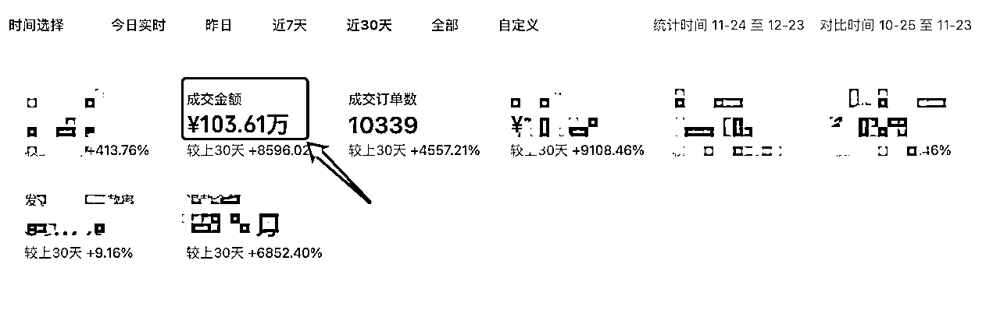
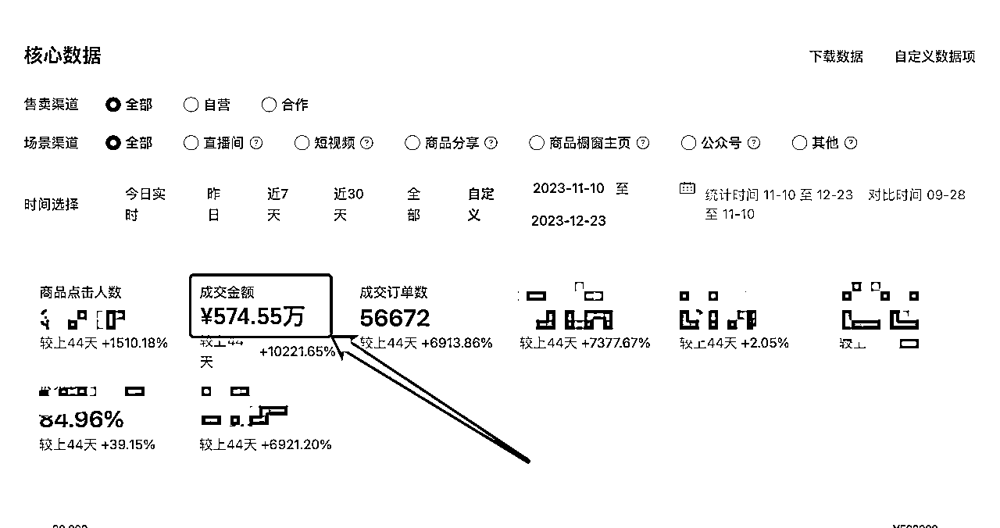
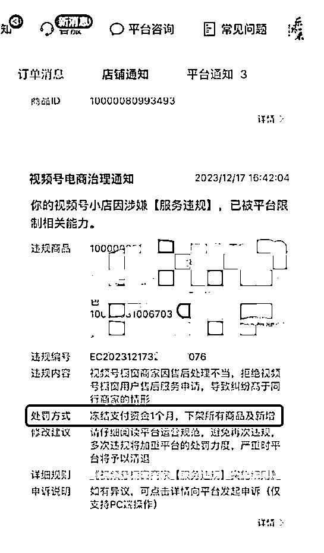
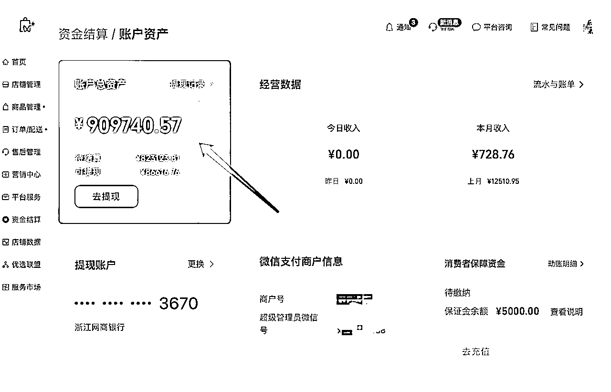

来源：https://kfeoftapye.feishu.cn/docx/LHs5di0ZAoAK6Qxd0sEcDoQ4nBh
各位圈友好，我是晋四喜。老朋友了~
目前主要在做微信视频号小店生鲜和中医图书类目，加上无卡支付项目。今天写这篇帖子，是因为最近视频号小店的大动荡，让我在创业思维上感到一次空前的顿悟，所以特来和大家分享一下，希望对圈友们有所帮助。


如果你正在做视频号直播微信豆投流玩法，应该也能感受到如上图的泼天的GMV。数据总体还是不错，但我想告诉你的是，这不是我团队自播出来的，而是和一位认识2年的生财圈友的直播团队合作出来的战果。
我们从今年11.10日开始合作，40天的时间，正常直播时间不超过一个月。
我方团队主要负责店铺后端所有操作+投流资金加持，圈友主要负责前端直播。在优势互补以后，把圈友原本月销100万出头，直接往上拉了几个台阶。
但凡事都不会那么一帆风顺，我们遇到了第一个黑天鹅~


（左图违规图和右图是冻结资金额度）
上面这张图是我12.17日的其中一个视频号小店的违规，直接冻结了近100万的货款30天。各种渠道申述和想办法，都无法解冻，只能悻悻的等30天。虽然没有对现金流造成太大的影响，但这无疑给我们敲响了一个警钟——视频号必须要精细化运营了。
为了避免类似的事件再次发生，我和团队伙伴把视频号官方的规则全部拿出来拆解了一遍，找到了一些后端最容易犯的问题以及应对措施：
视频号商家违规注意事项：
1、发布超出视频号橱窗商家资质的商品——店铺降级及店铺重置名称，最高暂停使用橱窗30天
2、服务违规——最高禁止提现30天、扣除违规所得、违约金、保证金、清退（客服、发货不达标、售后不达标、商责不达标、介入纠纷不达标、商品品质不达标）——日常好评补单，电话沟通客户更改售后类型。
3、虚假交易——最高封主账号橱窗（补单，补好评会触发）
4、质量抽查——最高永久封禁橱窗。商责、品退处于行业末尾水平5-10%
5、关于信用分相关，一定要避免罚款（重点考核）
如果你仔细看，一定发现了，对于这些常见的违规，我把最高处罚罗列出来了。不难发现，平台把售后和品控当作红线，一定要合理避免。（做任何事都要把最坏的事情预见到，再作出行动指示和风险预警）
下面是视频号重要的规则链接，如果你也在做视频号，我也建议你好好学习一下，很多规则会在原规则上暗改，所以一定要定时重新翻看下重要的规则。
| 序号 | 规则名称 | 链接 | 备注 |
|---|---|---|---|
| 1 | 视频号带货公告与规则 | https://channels.weixin.qq.com/commerce/#/noticeList | 总合集 |
| 2 | 视频号橱窗-【商家信用分】 | https://support.weixin.qq.com/cgi-bin/mmsupportacctnodeweb-bin/pages/eSJSFJmG9Cqhr2SB | 信用分（扣罚相关） |
| 3 | 视频号橱窗-【达人信用分】指引 | https://support.weixin.qq.com/cgi-bin/mmsupportacctnodeweb-bin/pages/lpKlEroy4iyRPQyd | 信用分（扣罚相关） |
帖子发出去以后，有圈友问我如何合理避坑，以下几点建议：
1、在售后问题的处理，尽可能是通过电话和用户沟通，出现品退的尽可能让用户去修改退还理由。（注意优先处理情绪，再去聊事情本身，态度一定要好，这是处理售后的基本要旨）
2、建议纠纷类不要给用户死咬对错，如果损失能接受，就直接让用户撤回，走线下给他处理退款之类的，适当降低纠纷率。
3、一定要每天看DSR评分，一旦你的品质，售后，纠纷类评分高于同行，一定要引起重视，因为这个时候你很容易被官方关注，特别是你的量还很大的情况。毕竟造成的影响太大了。
4、定时做一些补单补好评，这个可以对冲差评率。
5、关于物流相关的信息，定期跟踪异常物流信息的订单。可以导出订单到猪猪快递云https://yun.zhuzhufanli.com/?preuid=252328；也可以用服务市场里的芝麻小客服，价格小贵。1280一个店/年。
做好以上几点，要想被冻结都难~
其实2023年公司一直处于增长期，但这一整年我都如履薄冰。脑子里面无时无刻都在思考两个问题：
1、是否在增长过程中，有什么我没有考虑到的风险，如果有不能解决的潜在风险，是否能承受因此带来的后果。
2、如何让公司的业绩，能稳定的可持续发展，而不是昙花一现。
上面是过去一个多月里发生的一些事情，如果按照以前，可能把这个坎过了以后也就完了。但是在12.20日半夜4点的一次惊醒，想到最近为了应对视频号平台的调整的团队高度配合，我也做电商2年多了，完全可以趁这次平台的调整来个团队升级大改造。
公司虽然有基础的建制和人员配置，但是一直因为业绩没有太大起色，团队优化起来效率很低。准确来说，只是一个披着公司皮囊的工作室。现在正是打胜仗的阶段，员工的积极性最高，来个鱼跃龙门正当其时。
目前我陆续对团队进行了以下的调整：
a，人员虽然不多，但是为了提升团队工作效率，在成本合理的情况下做增岗增员，细化各岗位具体职责，让专事有专人负责；（门店运营、直播商务、售后客服、供应链管理等职位细化）
b，继续保持扁平化架构，但要提升沟通效率。沟通成本是一个公司最大的成本，所以降低内部沟通成本就非常重要。借助企业微信管理软件，教给员工一些沟通方法工具，学会把想表达的事情通过文字高效描述。要考虑听者的理解是否容易。
（其实这个习惯是在生财养成的，每次链接别人都会尊重别人的时间，1句话能说清楚的绝不多说一句，该说的重点信息也绝不遗漏。毕竟5分钟不能说清的事情，半个小时肯定也说不清楚）
c，胜仗的阶段，最怕的就是骄傲。所以我一直告诉团队，咱们现在处于鱼跃龙门的阶段，大家都要合力把龙门跃过，并且不断地提升自己的能力，不要等到公司跃上去以后，因为个人能力无法匹配而被淘汰，无法享受战果。（当下团队伙伴都非常愿意做新的尝试）
a，公司招人这个动作不能停，哪怕现在不缺人也要一直招人，人员是筛选出来的不是培养出来的。这一点是涛哥传授的，我也深有体会。这块直接给到HR要求，每月到面和试岗的人次。
b，新员工有固定的入职培训和岗位，老员工有业务能力升级培训。让HR和员工一一沟通，梳理出一套相对固定的培训课件，然后我进行优化调整。（我刚出社会时，在一个连锁手机店做店长，那时就get了培训和考试的重要性。一直贯穿我创业的13年）
a，因为我有开周会和月会的习惯，每次安排工作以后会出现跟进不及时的情况，以至于效率低下，通过企业微信的OKR协同工具，方便跟踪所有工作的进度。
a，这块是最重要的，钱没管好做再多都白搭，公司的运作所有都围绕着财务目标。我以前做手机零售店时就出现过账面算出来赚钱，但是钱就是不知道上哪儿去了。最近两年才发现，账清楚了钱也得清楚，公司所有的财务都得对的上，钱出去了东西就得回来，所有应收应付、待结算和已结算货款、投放资金、云仓费用，发货损耗等等，都必须要算明白，并且对得上。
b，税筹规划。合理的规避一些不必要的税务开支，但该给的税也一分都不能少。不仅是为了规避稽查风险，也要考虑后期公司如果继续壮大需要更多资金，如何让缴税标准符合银行企业贷款要求，这样才能降低融资成本。
能想到以上的事情，绝大程度上都归功于早期自己干手机连锁店的管理经验以及过去3年看过的企业管理书籍，仿佛到了那个阶段，知识一瞬间就涌出来了。
希望上面的这些知识能对一些和我共处一个阶段的公司有所启发，如果有不同的观点和建议，也欢迎大家来链接沟通。
2023年，我打破了自己的认知束缚，找到了属于自己的“钥匙”，我是幸运的，也把这些点分享给你，
如果想做成一件事，最好的就是找到在这件事上面有结果的人学习，你遇到过的大部分问题，他很大概率都遇到过，他给你意见或者建议会比行外人中肯很多。
我做电商这3年多，结识了很多优秀的朋友，每个阶段遇到的问题都能快速的找到解决答案，很多都是源自于他们的帮助。
过去几年中，我做过短视频带货、后端店铺、直播带货、引流变现，虽然都不同出程度的拿到了结果，但是后端店铺和引流变现业务上，也发现自己是能全身心投入的并且产生持续迭代的。相反短视频和直播，虽然在某些风口上拿到过一些成功，但大多不长久。（我看直播不会超过半个小时，但是研究后端店铺和引流优化是非常兴奋的）
从今年把短视频和直播团队砍掉后，团队专注店铺后端和支付引流业务之后，一直就顺风顺水的。
目前在电商业务上，我分析下来优势有这些。
a，我们团队擅长视频号后端店铺运营，两年视频号电商运营经验，熟悉平台各类玩法和调性，能灵活的应对平台周期下的所有问题，目前有15家视频号小店。
b，我们有足够的资金体量，除去自有资金1000W左右，外部可调配资金在1000W左右。足以支撑各类直播团队货款和投放资金的需求。
c，我们有完善的后端团队人员配置。店铺运营、BD、短视频、客服岗位全都是经验丰富的老将，完美支撑前端发展。
d，在生鲜食品和图书类目供应链，云仓等第三方对接上经验丰富，能够最大程度的优化商品成本，让大家的利润最大化。
在明确定位以后，很快的就拿到了阶段性结果。（这里顺便找一下有放大业务需求的直播团队，探讨一下生财大计。V：xsd9092）
这其实是老生常谈了，但我今年确实在这块受益匪浅。
过去十年线下积累的羽毛，让股东无条件的信任我；过去三年线上的羽毛，让朋友能啥都没要，直接转了200W给我做资金拆借。
不管曾经10来年经营手机连锁店的经验，还是这几年看过的书和写过的文章，又或者是开贷款中介公司的背景，还是这几年各种项目的尝试，其实都在不断地成就现在的我。
所以，勇敢去经历，你总会在未来的一瞬间感觉到你曾经的努力没有白费。
这是个人能力强的人赚不到对应财富的鸿沟。
很多个人能力强的人，在没赚到钱之前大多都会把道德底线崩的很高（俗称孔乙己的长衫），因为只有这样才能给自己没赚到大钱一个合理的归因，才不会否认自己，但事实是对财富的认知不够。想赚钱就不要分黑白，想赚大钱就不要有道德负担。
赚到第一个100万以前，只要所做的事不犯法，理论上你可以不择手段，但不建议牺牲羽毛来换取。
钱的来源无非：掠夺、交换、剥削、垄断、受赠。如果你身在底层，那赚钱只能从掠夺开始了。什么是掠夺，就是你把别人的钱通过合法的手段抢过来变成你的钱。你的掠夺能力越强，你就越有钱；你的掠夺能力越弱，那你就越没钱——这是年初让我醒悟的点，贯穿了我一整年。
当然如果那时你觉得自己的能力不足，一定要扎根苟住，避免胡乱投资，不打败仗慢慢补课，才不会重新跌落。
用金钱观来压轴，因为我认为这一点会束缚很多人，包括曾经的我，幸运的是我现在懂了，所以就找到了自己的答案。
2023年已经接近尾声，希望大家今年都收获满满，我们2024年见，一起生财有术！